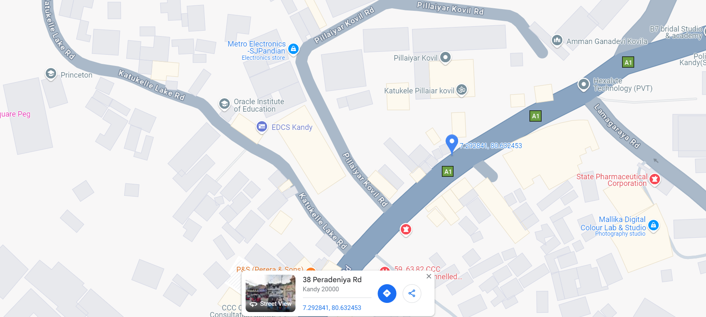
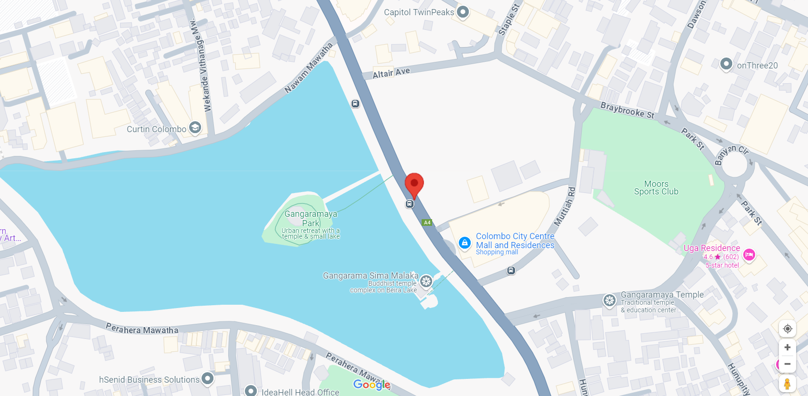
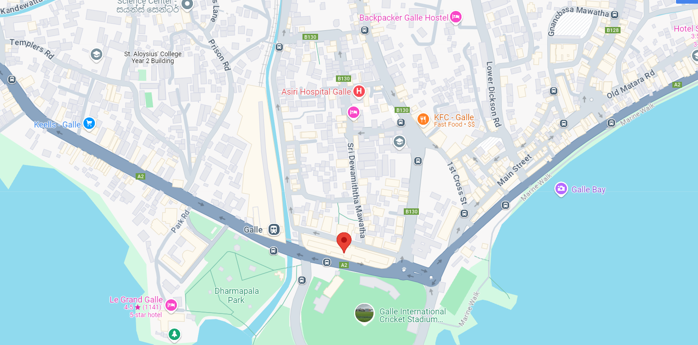

Welcome to Dr. Kandy Hospital, a cornerstone of exceptional healthcare in the Kandy community since 1990. Located in the heart of Kandy, Sri Lanka, with branches also in Colombo and Galle, our hospital is dedicated to providing outstanding medical services with a deep commitment to compassion and excellence. Our extensive facility boasts over 500 beds and is supported by a team of more than 500 highly qualified consultants, ensuring that we can offer specialized care across a wide range of medical disciplines. We handle over 2,000 consultations per day, reflecting our capacity to meet the diverse and complex healthcare needs of our community efficiently and effectively. Equipped with state-of-the-art technology and advanced medical equipment, our hospital provides a comprehensive array of services—from routine check-ups and preventive care to intricate surgical procedures and specialized treatments. Our dedicated team of doctors, nurses, and support staff work collaboratively to deliver the highest standard of care in a supportive and nurturing environment. At Dr. Kandy Hospital, we are committed to patient-centered care, focusing not just on treating illnesses but also on providing education, support, and reassurance to our patients and their families. Our warm and welcoming environment is designed to make each visit as comfortable as possible. We take pride in our long-standing reputation for excellence and are honored to be your trusted partner in achieving and maintaining your health and well-being. Our mission is to continue serving the Kandy, Colombo, and Galle communities with dedication, innovation, and care, helping you and your loved ones lead healthier, happier lives.
Visit Us

Our hospital is conveniently situated on Kandy-Colombo Road, Kandy, Sri Lanka, a prime location that provides easy access to residents and visitors in the region. Nestled in the heart of Kandy, our main facility is well-connected to major routes and landmarks, ensuring a seamless experience for those seeking our services. We are excited to announce that we will soon be expanding with a new branch in Kurunegala, Sri Lanka. This new location will further our commitment to providing high-quality healthcare services to a broader community, enhancing accessibility and convenience for our patients.

Our Dr Kandy Colombo branch is strategically located next to the Colombo City Centre (CCC) and near the historic Gangaramaya Temple. This prime location offers easy access to both residents and visitors in Colombo, ensuring a convenient and accessible healthcare experience. Our branch is designed to provide the same high-quality medical services and compassionate care that define our main facility in Kandy.

Our Dr Kandy Galle branch is conveniently situated near the Galle International Cricket Stadium. This prime location provides easy access for residents and visitors in the southern region, ensuring that top-notch healthcare services are within reach. Our Galle branch upholds the same commitment to excellence and compassionate care as our main facility in Kandy.
